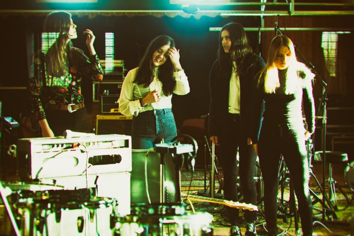

“Deadlock”
Como una conjunción de ideas basadas en la clásica psicodelia, refrendando sus acciones en influencias como las de Amon Düül II, The Banshees o NEU!, los suecos MaidaVale, después de su fichaje por The Sign Records, regresarán en la primavera de este 2018 con el que será la continuación de su debut del 2016, “Tales Of The Wicked West”.
No sabemos que puede aportar su próximo LP, “Madness Is Too Pure”, pero recientemente acaban de publicar el primero de sus singles; “Deadlock” un trance que pasa prácticamente como género mucho más alternativo, sin alejarse de los patrones más clásicos y reverberantes que conforman los pináculos del género psicodélico.
El 23 de Marzo aterrizará este “Madness Is Too Pure” que se enfrentará desde los próximos días a una gira por Suecia y Francia en representación de su última oferta, sin olvidarnos de su contribución en Mayo para una nueva edición del Desertfest de Berlín.